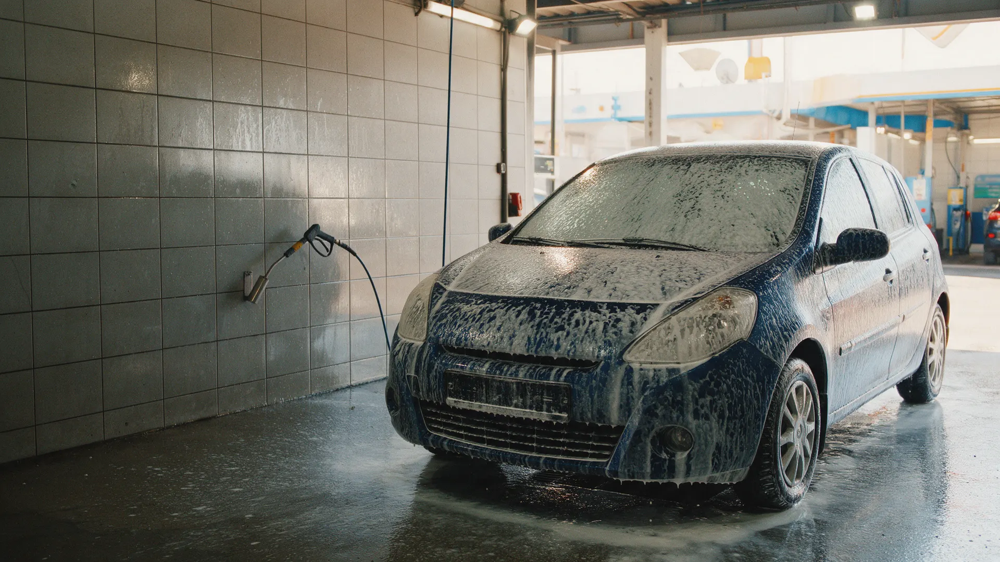
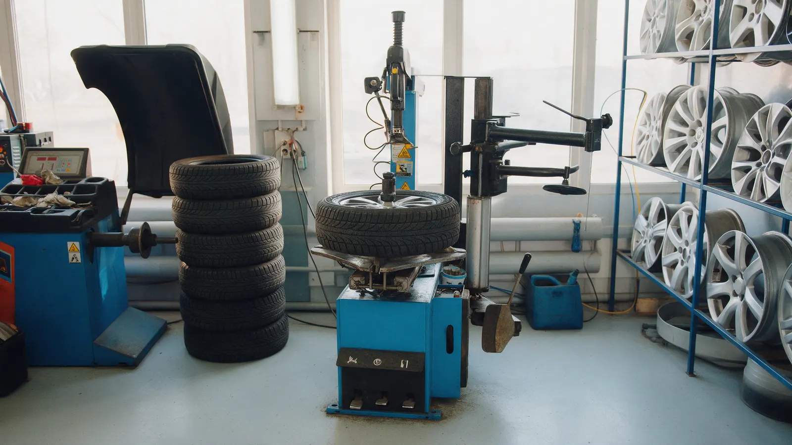
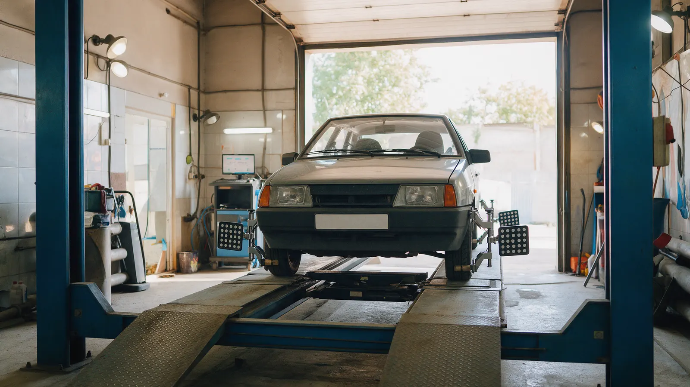
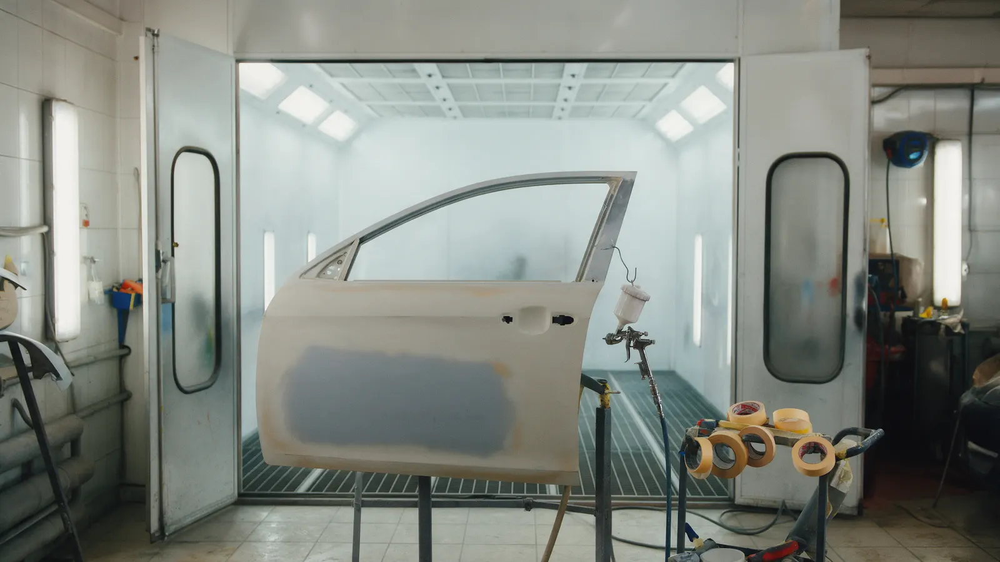

Автосервис, мойка и шиномонтаж на Сибирской, 75
Автосервис в Глазове: ремонт, мойка и шиномонтаж с записью
Диагностика и ремонт, шиномонтаж, автомойка, развал-схождение. Рейтинг 4,1 на Яндекс Картах, 18 отзывов.
- Рейтинг 4,1 на Яндекс Картах, 55 оценок
- Мойка от 350 ₽, шиномонтаж 1000 ₽
- Предварительная запись, парковка и Wi-Fi

Чем занимается автосервис
Входит
- Автомойка и шиномонтаж
- Диагностика и ремонт двигателя, КПП, ходовой
- Развал-схождение и компьютерная диагностика
- Замена масла, ГРМ, сцепления
- Кузовной ремонт, покраска, полировка
- Генераторы, стартеры, ГУР, турбины, форсунки
Отдельно, если нужно
- Запчасти под заказ
- Цены на остальные работы - при записи
Цены на услуги
Цены с карточки на Яндекс Картах, уточняйте при записи.
Мойка и шины
- Мойка автомобилякузов, удаление дорожной грязи350 ₽
- Шиномонтаж и балансировка колёс1 000 ₽
Диагностика и ремонт
- Диагностика и ремонт автомобилейот 1 000 ₽
- Диагностика и ремонт двигателяот 1 000 ₽
- Развал-схождениеуточнить
- Замена маслауточнить
Цены на остальные работы называют при записи.
Как записаться
- 01
Позвонили или написали
Телефон +7 (912) 750-85-85 или ВКонтакте.
- 02
Выбрали время
Клиентка пишет: записали на пятницу в 16 часов.
- 03
Приехали
Сибирская, 75. Пн-пт 08:00-17:00.
- 04
Оплатили картой
Оплата картой на карточке указана.



Что пишут клиенты
Быстро и без наценок
Клиент пишет: работают быстро, без лишних наценок.
Запись на удобное время
Клиентка пишет: записали на удобное время, машину помыли за 20 минут.
Иномарки
Клиентка пишет: ремонт и ТО отлично.
Отзывы с Яндекс.Карт
«Сервис один из лучших в городе по соотношению цены и качества. Работают быстро, без лишних наценок.»
Бармин Д. · 26 сентября 2025
«ремонт и ТО отлично, лучше сервиса в Глазове нет по иномаркам.»
Наталия Яковлева · 29 мая
«Удачно записали в удобное для меня время - пятница 16 ч. Машину помыли за 20 минут.»
Ольга · 13 декабря 2025
Отзывы с карточки на Яндекс.Картах, без правок.
Частые вопросы
Когда работаете?
Пн-пт 08:00-17:00. Суббота и воскресенье - выходной.
Сколько стоит мойка?
Мойка автомобиля - 350 ₽ по данным карточки.
Нужна ли запись?
На карточке указана предварительная запись: +7 (912) 750-85-85.
Как оплатить?
Картой.
Запишитесь на обслуживание
- Адрес
- Сибирская, 75, Глазов
- Часы
- Пн-пт 08:00-17:00
- Телефон
- +7 (912) 750-85-85